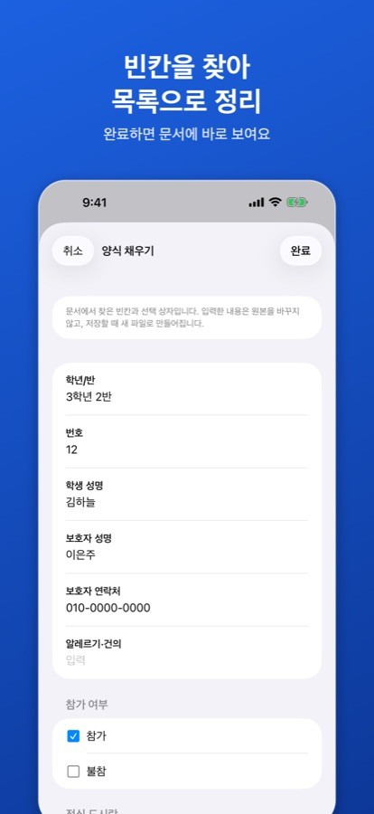
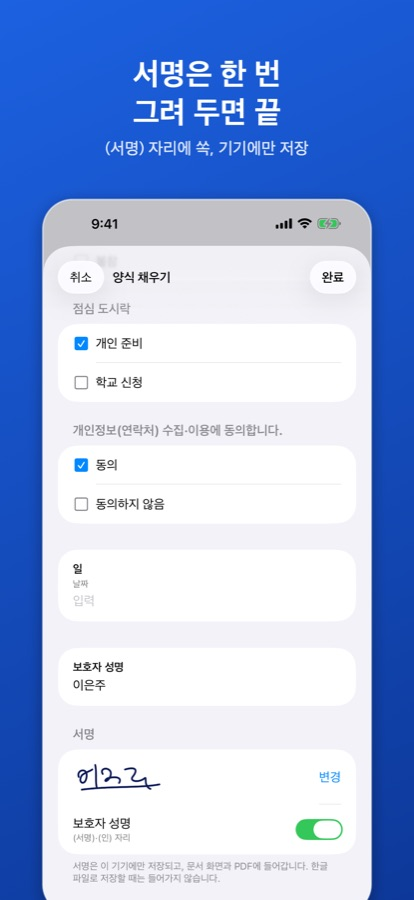
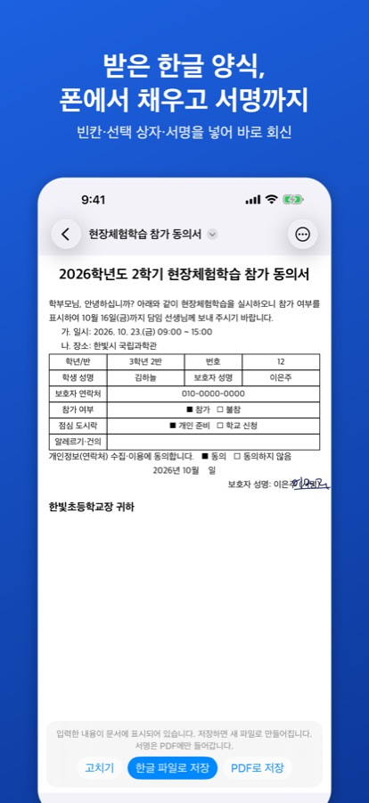

가정통신문 회신서, 폰에서 작성·서명하기
이런 문서에 씁니다
현장체험학습 참가 동의서, 방과후학교 신청서, 개인정보 수집·이용 동의서처럼 표 안에 성명·연락처 빈칸과 □ 선택 상자, ‘보호자 성명: ______ (서명)’ 줄이 있는 한글 회신서를 출력하지 않고 폰에서 채워 바로 회신할 수 있습니다.
서명 없이 채운 양식을 PDF로 저장하는 것은 무료입니다. 양식 저장(한글 파일로 저장, 서명 넣은 PDF·쪽 이미지)은 3번까지 무료이고, 이후에는 평생 이용권을 한 번 구입합니다(2026년 10월 한국 App Store 기준 4,400원, 구독 아님). 같은 이용권으로 PDF·사진 변환도 계속 쓸 수 있습니다.
1. 회신서 열고 빈칸 채우기
- 카카오톡·메일로 받은 회신서를 공유 버튼 → ‘HWP 뷰어’로 엽니다.
- 문서 화면 오른쪽 위 ‘더 보기’(…) → ‘양식 채우기’를 누릅니다.
- 앱이 찾은 빈칸(학년/반, 학생 성명, 보호자 연락처 등), □ 선택 상자, ‘참가( ) 불참( )’ 같은 괄호 선택, ‘2026년 __월 __일’ 같은 날짜 칸이 목록으로 나옵니다. 입력하고 고르면 됩니다.

2. 서명 넣기
문서에 ‘(서명)’·‘(인)’ 자리나 서명 칸이 있으면 목록 아래에 ‘서명’ 항목이 나옵니다.
- ‘서명 그리기’를 누르고 손가락으로 서명한 뒤 ‘완료’를 누릅니다.
- 서명을 넣을 자리(예: 보호자 성명) 옆 스위치를 켭니다.
- 서명은 이 기기에만 저장되어(1.2.0부터는 이 기기와 내 iCloud에 저장되어 같은 Apple ID의 iPad에서도) 다음 양식에서도 바로 쓸 수 있습니다. 다시 그리려면 ‘변경’, 지우려면 ‘서명 삭제’를 누릅니다.

3. 확인하고 PDF로 보내기
- ‘완료’를 누르면 입력한 내용과 서명이 문서에 바로 표시됩니다. 고칠 것이 있으면 아래의 ‘고치기’를 누릅니다.
- ‘PDF로 저장’을 누르면 원본은 그대로 두고 새 PDF가 만들어집니다.
- 공유 화면에서 카카오톡·메일로 보내거나 파일 앱에 저장합니다.

학교에서 한글 파일로 달라고 할 때
HWPX 문서는 ‘한글 파일로 저장’을 누르면 이름에 ‘(작성)’이 붙은 새 HWPX 파일이 만들어집니다. 단, 서명은 PDF와 쪽 이미지에만 들어가고 한글 파일로 저장할 때는 빠집니다. HWP(.hwp) 문서는 PDF로 저장됩니다. 서명이 필요한 회신서는 PDF로 보내는 것이 확실합니다.
예시 양식으로 미리 해 보기
서명 줄이 있는 가상의 학교 동의서로 연습할 수 있습니다: form-sample-sign.hwpx
알아 두세요
모든 칸을 찾나요?
앱이 찾은 빈칸만 목록에 나옵니다. 문서 모양에 따라 찾지 못하는 칸이 있을 수 있고, ‘참가( ) 불참( )’ 같은 괄호 칸은 양식으로 보이는 문서에서만 찾습니다. 찾지 못한 칸은 앱에서 채울 수 없습니다. 개인정보를 지운 예시 양식을 메일로 보내 주시면 개선에 참고하겠습니다.
도장을 찍을 수 있나요?
도장 이미지는 넣을 수 없습니다. ‘(인)’ 자리에는 손으로 그린 서명을 넣을 수 있습니다.
입력한 내용과 서명은 어디로 가나요?
기기 안에서만 처리하며 서버로 보내지 않습니다. 서명은 이 기기에만 저장됩니다(1.2.0부터는 이 기기와 내 iCloud에만 — 개발자 서버 없음).
양식 말고 다른 글자도 고칠 수 있나요?
1.0.6부터 ‘더 보기 › 글자 고치기’로 문단과 표 칸의 글자를 고칠 수 있습니다. 양식 채우기와는 한 번에 하나씩 씁니다. 글자 고치기 방법
1.1.0부터 ‘더 보기 › 도장·펜 표시’로 도장 사진을 찍어 넣을 수 있습니다. 도장 찍는 방법
iPad에서도 되나요?
됩니다. 같은 앱에서 같은 방법으로 쓸 수 있습니다. 현재 Mac 버전에는 양식 채우기와 서명 기능이 아직 없습니다.